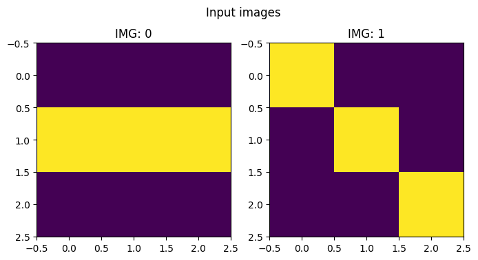

import io
from contextlib import redirect_stdout
def test_eq_stdout(f, expected):
"""
Test if the output of function `f` matches the expected string.
Args:
f (callable): A parameterless function that prints to stdout.
expected (str): The expected printed output.
Raises:
AssertionError: If the output does not match the expected string.
"""
buffer = io.StringIO()
with redirect_stdout(buffer):f()
output = buffer.getvalue().strip()
test_eq(output,expected)spellops
Testing utilities
from fastcore.test import test_fail
def my_function(): print("Hello, world!")
# Successful test
test_eq_stdout(my_function, "Hello, world!")
# Failing test
test_fail(lambda: test_eq_stdout(my_function, "Hello, world ?"))tee operator
tee is a debugging and documentation tool that prints the current state of data transformation while allowing the chain to continue. Like its Unix namesake, it lets you “peek” at data flowing through a pipeline without interrupting it.
Sample use cases: 1. Debug Data Transformations 2. Document Pipeline Steps 3. Custom Visualization 4. Development/Teaching
L.tee
L.tee (msg=None, f=<function _default_print>, show=True, **kwargs)
# Unit tests
# Default tests
test_eq_stdout(lambda: L([1,2,3]).tee(), "[1, 2, 3]")
test_eq_stdout(lambda: L([1,2,3]).tee('values'), "values\n[1, 2, 3]")
test_eq_stdout(lambda: L([1,2,3]).tee('values', sep=':'), "values:[1, 2, 3]")
# Advanced print
def my_print(x,msg,symbol): print(f'{symbol} {msg} : {x}')
test_eq_stdout(lambda: L([1,2,3]).tee('values', f=my_print, symbol='!'), "! values : [1, 2, 3]")# 1. Debug Data Transformations
(L(['1.2', '3.4', '-2.1'])
.map(float).tee('After converting to float')
.map(abs).tee('After taking absolute values'))After converting to float
[1.2, 3.4, -2.1]
After taking absolute values
[1.2, 3.4, 2.1](#3) [1.2,3.4,2.1]# 2. Document Pipeline Steps
(L(['12', 'abc', '23', '0', 'x'])
.map(lambda x: x if x.isdigit() else None).tee('Converted to int or None')
.filter(lambda x: x is not None).tee('Filtered out non-numbers'))Converted to int or None
['12', None, '23', '0', None]
Filtered out non-numbers
['12', '23', '0'](#3) ['12','23','0']# 3. Custom Visualization (using emoji for fun)
custom_print = lambda x, msg: print(f"🔍 {msg}: {[f'item_{i}:{v}' for i,v in enumerate(x)]}")
(L([1, 2, 3, 4])
.map(lambda x: x*2).tee('Doubled values', f=custom_print))🔍 Doubled values: ['item_0:2', 'item_1:4', 'item_2:6', 'item_3:8'](#4) [2,4,6,8]# 4. Development/Teaching
(L([{'a':1}, {'a':2}, {'a':3}])
.tee('Starting with dictionaries')
.map(lambda d: d['a']).tee('Extracted "a" values')
.map(lambda x: x+10).tee('Added 10 to each value'))Starting with dictionaries
[{'a': 1}, {'a': 2}, {'a': 3}]
Extracted "a" values
[1, 2, 3]
Added 10 to each value
[11, 12, 13](#3) [11,12,13]With tee you can inspect the state of your pipeline with arbitrary complex functions:
import numpy as np
def print_as_matrix(x:L, msg):
print(msg)
N = len(x)
rows = len(x[0])
for r in range(rows):
row_str = (L([o[r] for o in x]).map(lambda o: ''.join(map(str,o))))
row_str = ' '.join(row_str)
print(row_str)
# Sums all the values of the first row of all matrices after rotating them of 90 degree
(L([[[0,0,0],[1,1,1],[0,0,0]],[[1,0,0],[0,1,0],[0,0,1]]]) .tee('Input images',f=print_as_matrix)
.map(lambda x: np.rot90(x,k=1)) .tee('Rotate 90 degree',f=print_as_matrix)
.map(lambda x: x[0].tolist()) .tee('Take first row')
.map(sum) .tee('Sum element in list')
.sum()
)Input images
000 100
111 010
000 001
Rotate 90 degree
010 001
010 010
010 100
Take first row
[[0, 1, 0], [0, 0, 1]]
Sum element in list
[1, 1]2tee supports even rich “inspection” with external libraries such as matplotlib.
# Advance tee
import matplotlib.pyplot as plt
import numpy as np
def plot_images(x:L, msg):
N = len(x)
plt.figure(figsize=(4*N,4))
for i,o in enumerate(x):
plt.subplot(1,N,i+1)
plt.imshow(o)
plt.title(f'IMG: {i}')
plt.suptitle(msg)
(L([[[0,0,0],[1,1,1],[0,0,0]],[[1,0,0],[0,1,0],[0,0,1]]]) .tee('Input images',f=plot_images)
.map(lambda x: np.rot90(x,k=1)) .tee('Rotate 90 degree',f=plot_images)
)(#2) [array([[0, 1, 0],
[0, 1, 0],
[0, 1, 0]]),array([[0, 0, 1],
[0, 1, 0],
[1, 0, 0]])]

pipe operator
pipe applies a function to the entire L collection, rather than to individual elements (like map does). With wrap=True (default) it returns an L for chaining, with wrap=False it returns the raw result.
NOTE: pipen(f) is an alias to pipe(f,wrap=False)
L.starpipe
L.starpipe (f, wrap=True)
L.pipe
L.pipe (f, wrap=True)
test_eq(L([1,2,3]).pipe(len),L(3))
test_eq(L([1,2,3]).pipe(len, wrap=False),3)
test_eq(L([1,3]).starpipe(lambda a,b: a+b),L(4))
test_eq(L([1,3]).starpipe(lambda a,b: a+b, wrap=False),4)L.starpipen
L.starpipen (f)
L.pipen
L.pipen (f)
test_eq(L([1,2,3]).pipen(len),3)
test_eq(L([1,3]).starpipen(lambda a,b: a+b),4)# Count how many elements of a reference set are present in a L
L([1,2,3,2]).pipe(lambda x: set(x).intersection({1,3,5})).pipe(len,wrap=False)2L(['a', 'b', 'c']).pipe('->'.join, wrap=False)'a->b->c'# Using the convenience `pipen`
L(['a', 'b', 'c']).pipen('->'.join)'a->b->c'You can solve this line by line and have it documented step by step:
# Count how many elements are present in both sublists using a function with two parameters
(L([[1,2,3,2],[2,4,1]]) .tee('input')
.map(set) .tee('to set')
.starpipe(set.intersection) .tee('common elements')
.pipe(len, wrap=False)
)input
[[1, 2, 3, 2], [2, 4, 1]]
to set
[{1, 2, 3}, {1, 2, 4}]
common elements
[1, 2]2Or you can abstract part of the computation away and have it delegated to a custom function:
# Count how many elements are present in both sublists using a function with two parameters
def count_intersection(a,b): return len(set(a)&set(b))
L([[1,2,3,2],[2,4,1]]).starpipe(count_intersection,wrap=False)2unwrap operator
unwrap safely extracts a single value from an L collection, returning None for empty lists and raising an error if there are multiple elements. It’s designed to safely terminate L-chains when you expect exactly one result.
L.unwrap
L.unwrap ()
test_eq(L([1]).unwrap(),1)
test_eq(L([]).unwrap(),None)
test_fail(lambda: L([1,2]).unwrap())# Count how many elements are present in both sublists
(L([[1,2,3,2],[2,4,1]]) .tee('input')
.map(set) .tee('to set')
.starpipe(set.intersection) .tee('common elements')
.pipe(len) .tee('count elements')
.unwrap()
)input
[[1, 2, 3, 2], [2, 4, 1]]
to set
[{1, 2, 3}, {1, 2, 4}]
common elements
[1, 2]
count elements
[2]2